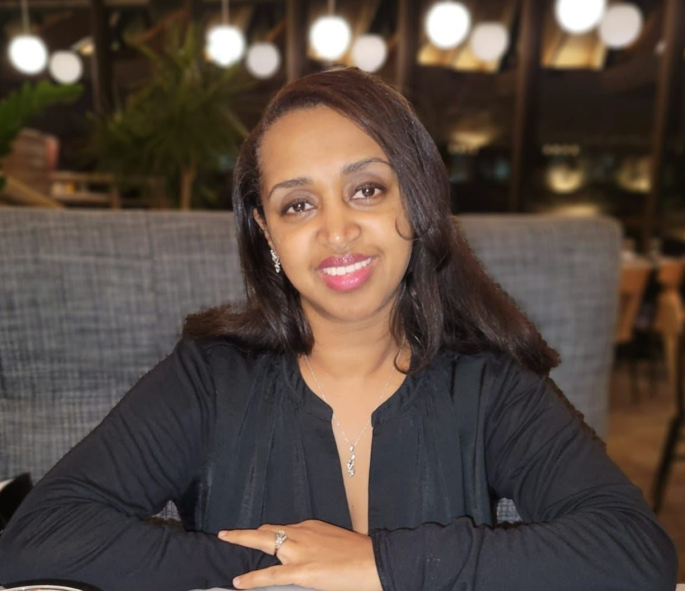
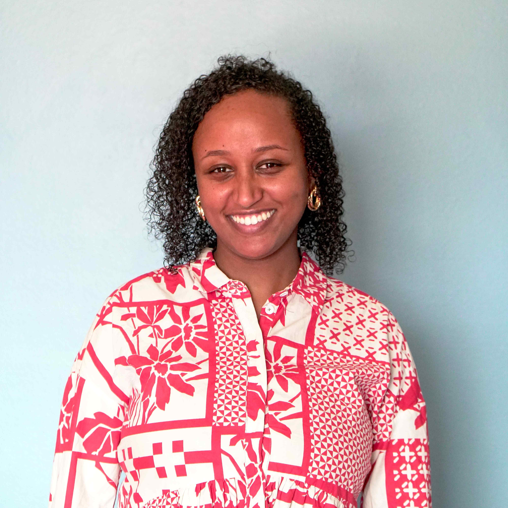

Deenbo Kidane
Master Apostle
 FireStarters
FireStarters

Ministries and partnerships
From the youngest members of our church to leaders across our city, we want to encourage, equip, and serve wherever God has placed us.

Our primary community
FireStarters is a place for young adults to pursue Jesus with others. We study Scripture, worship, pray, fast, share meals, and build the kind of friendships that help faith endure.
Young-adult leadership

Master Apostle

The next generation
Our young-adult team helps lead a safe, joyful environment where children encounter the story of Jesus through age-appropriate teaching, worship, and engaging activities.
Teachers and leaders
Master Apostle

Secretary Leader

Angelic Interpreter

Daughter of Apostle Paul

Optimus Evangelist

shows up sometimes
Ministry Affiliations
These relationships extend our ministry into a wider community of immigrant churches, bicultural leaders, trauma-informed care, and gospel-centered partners across Arizona.
Led by the same team serving through FireStarters, Daniel Initiative encourages and equips immigrant churches in Arizona. It creates space for international minority leaders and second-generation bicultural groups to build friendships, pray, worship, learn, and lead together.
Explore Daniel InitiativeFounded by Rev. Dr. Sanghoon Yoo, MSW, The Faithful City develops multicultural, resilient servant leaders and creates communities of belonging. Dr. Yoo leads trauma-informed care for FireStarters on the first Wednesday of each month.
Explore The Faithful CitySurge connects diverse church and ministry leaders committed to friendship, God’s mission, and the flourishing of local communities. Through gatherings, learning, prayer, and collaboration, the network helps churches make Jesus visible throughout the city.
Explore Surge NetworkFind your place